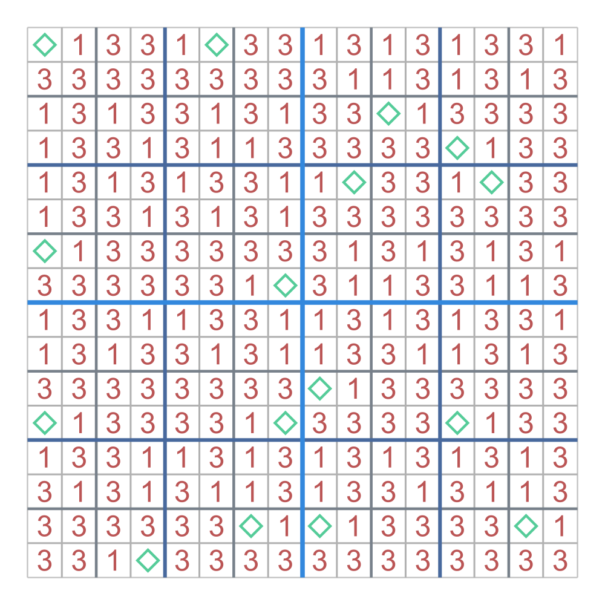
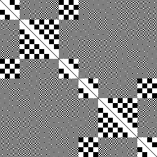
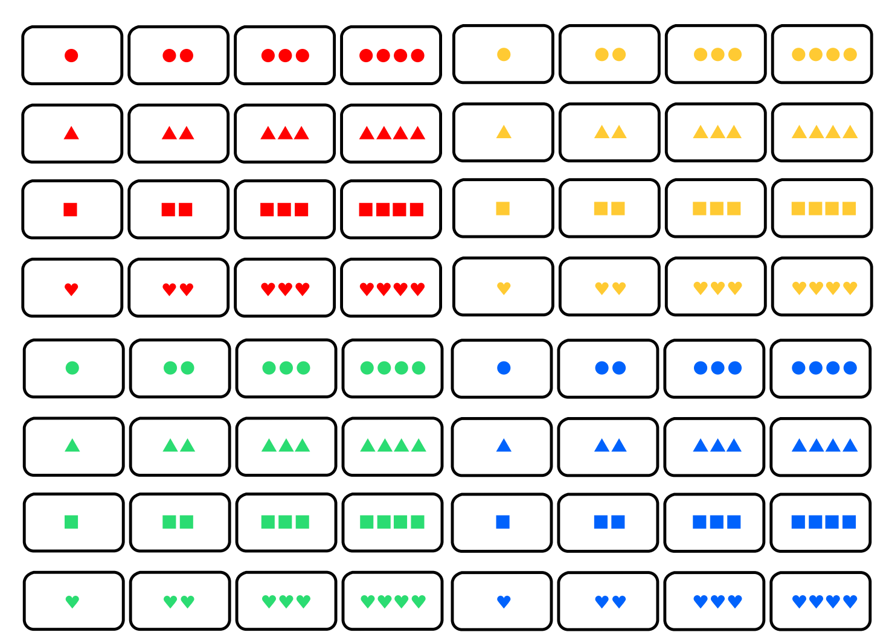

Research
I have a wide variety of interests, but the work that I have done lies in additive combinatorics,
cryptography, affine geometry, and geometric group theory.
During my last year at Bard, I wrote my senior thesis on APN functions, Sidon sets, and their
connections.
Some of this work appears in my senior thesis done at Bard College, titled Symmetry and
Structures of APN Functions and Sidon Sets and also my most recent paper, Uniform exclue
distributions of Sidon sets.
REU 2023-2024. I spent the summers of 2023 and 2024 participating in the CUBE REU
(led by Dan
Margalit) at Georgia Tech and Vanderbilt
University, repsectivley.
The mentors of the projects I was involved in for CUBE (along with the year I worked in their
project) were Wade Bloomquist (2023), Ryan Dickmann (2024),
Dan Margalit (2023-2024), and Abdoul
Karim Sane (2024).
During my time at CUBE 2023 and 2024, we studied the hyperbolicity constant of the curve graph of a
surface,
right-angled Artin groups (RAAGs),
and graph theoretical properties that are forbidden in any induced subgraph of the curve graph.
REU 2022. During the summer of 2022, I did a summer of undergraduate research at the Bard
Summer Research
Institute (BSRI), under the mentorship of Lauren Rose.
My research at the BSRI was in finite geometry and combinatorics and can be applied to the card game
EvenQuads.
During this time, we completely classified the affine equivalence classes of Sidon sets (or 2-caps)
in \(\mathbb{F}_2^n\) of size up to 9.
|
Papers
|
|

|
Uniform exclude distributions of Sidon sets
Darrion Thornburgh
Prepint, July 2024;
arXiv
A Sidon set \(S\) in \(\mathbb{F}_2^n\) is a set such that the pairwise sums of distinct points are
all
distinct.
The exclude points of a Sidon set \(S\) are the sums of three distinct points in \(S\), and the
exclude
multiplicity of a point in \(\mathbb{F}_2^n \setminus S\) is the number of such triples in \(S\) it
is equal to.
We call the function \(d_S \colon \mathbb{F}_2^n \setminus S \to \mathbb{Z}_{\geq 0}\) taking points
in \(\mathbb{F}_2^n
\setminus S\) to their exclude multiplicity the exclude distribution of \(S\).
We say that \(d_S\) is uniform on \(\mathcal{P}\) if \(\mathcal{P}\) is an equally-sized partition
\(\mathcal{P}\) of \(\mathbb{F}_2^n \setminus S\) such that \(d_S\) takes the same values an equal
number of times
on every element of \(\mathcal{P}\).
In this paper, we use APN plateaued functions with all component functions unbalanced to construct
Sidon sets \(S\) in \((\mathbb{F}_2^n)^2\) whose exclude distributions are uniform on natural
partitions of
\((\mathbb{F}_2^n)^2 \setminus S\) into \(2^n\) elements.
We use this result and a result of Carlet to determine exactly what values the exclude distributions
of the graphs of the Gold and Kasami functions take and how often they take these values.
|
|

|
Symmetry and Structures of APN Functions and Sidon Sets
Darrion Thornburgh. Advisors: Bob McGrail and Steven Simon
Undergraduate Thesis, May 2024;
Bard Digital Commons
Let \(\mathbb{F}_p^n\) be the \(n\)-dimensional vector space over \(\mathbb{F}_p\).
The graph \(\mathcal{G}_F = \{ (x, F(x)) : x \in \mathbb{F}_p^n \}\) of a vectorial function \(F
\colon
\mathbb{F}_p^n \to \mathbb{F}_p^m\) can have interesting combinatorial properties depending on
varying cryptographic conditions on \(F\).
A vectorial Boolean function \(F \colon \mathbb{F}_2^n \to \mathbb{F}_2^n\) is almost perfect
nonlinear (APN) if there are at most \(2\) solutions to the equation \(F(x+a) + F(x) = b\) for all
\(a,b
\in \mathbb{F}_2^n\) where \(a \neq 0\).
In this paper, we classify APN functions and important subclasses of APN functions in graph
theoretical terms using the Kneser graph of all translations of \(\mathcal G_F\).
We also study the properties of \(\mathcal G_F\) as a Sidon set.
In particular, we introduce the notion of uniform exclude distributions, and we study APN functions
whose graphs have uniform exclude distributions.
|
|
|
Topological methods in zero-sum Ramsey theorey
Florian Frick, Jacon Lehmann Duke, Meenakshi McNamara, Hannah Park-Kaufmann, Steven Raanes, Steven
Simon, Darrion Thornburgh, Zoe Wellner
Submitted, November 2023;
arXiv
A cornerstone result of Erdős, Ginzburg, and Ziv (EGZ) states that any sequence of
\(2n − 1\) elements in \(\mathbb{Z}/n\) contains a zero-sum subsequence of length \(n\). While
algebraic techniques
have predominated in deriving many deep generalizations of this theorem over the past sixty years,
here we introduce topological approaches to zero-sum problems which have proven fruitful in other
combinatorial contexts. Our main result (1) is a topological criterion for determining when any
\(\mathbb{Z}/n\)-
coloring of an n-uniform hypergraph contains a zero-sum hyperedge. In addition to applications
for Kneser hypergraphs, for complete hypergraphs our methods recover Olson’s generalization of
the EGZ theorem for arbitrary finite groups. Furthermore, we (2) give a fractional generalization
of the EGZ theorem with applications to balanced set families and (3) provide a constrained EGZ
theorem which imposes combinatorial restrictions on zero-sum sequences in the original result.
|
|

|
How Many Cards Should You Lay Out in a Game of EvenQuads: A
Detailed Study of Caps in AG(n,2)
Julia Crager, Felicia Flores, Timothy E. Goldberg, Lauren L. Rose, Daniel Rose-Levine, Darrion
Thornburgh, Raphael Walker
La Matematica, May 2023;
We define a cap in the affine geometry \(\mathrm{AG}(n,2)\) to be a subset in which any collection
of \(4\) points is
in general position.
In this paper, we classify, up to affine equivalence, all caps in \(\mathrm{AG}(n,2)\) of size \(k
\leq 9\). As a
result, we obtain a complete characterization of caps in dimension \(n \leq 6\), in particular
complete
and maximal caps. Since the EvenQuads card deck is a model for \(\mathrm{AG}(6,2)\), as a
consequence, we
determine the probability that an arbitrary \(k\)-card layout contains a quad.
|
Web-Based Tools
|
|
|
Projective Set Visualizer (ProSet Vis)
Darrion Thornburgh
Febuary 2023;
Source
In short, this online web-based tool visualizes sum-free sets in \(\mathbb{F}_2^n \setminus \{0\}\)
for \( 2 \leq n \leq 14\).
Projective Set is a card game,
similar to the card game Set, and the
cap sets in Projective Set are exactly the sum-free sets in \(\mathbb{F}_2^6 \setminus \{0\}\).
The Projective Set Visualizer (ProSet Vis) is an online web-based tool forked from the Qap
Visualizer that aids in constructing cap sets in Projective Set.
|
|
{kind=link}